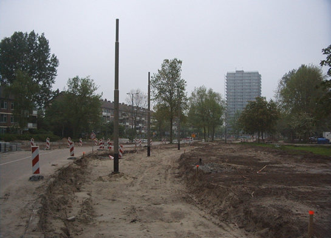
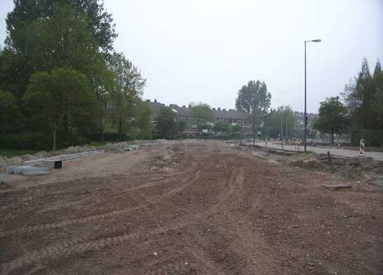
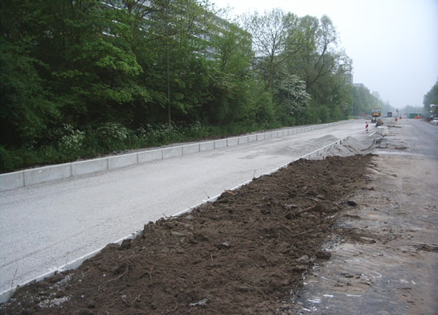
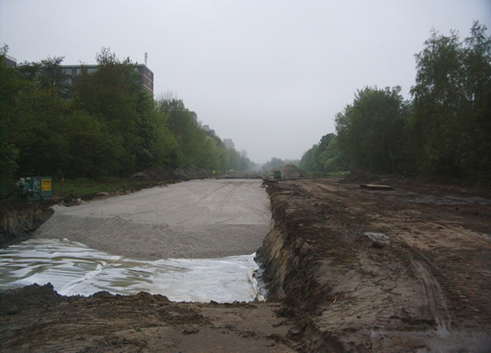
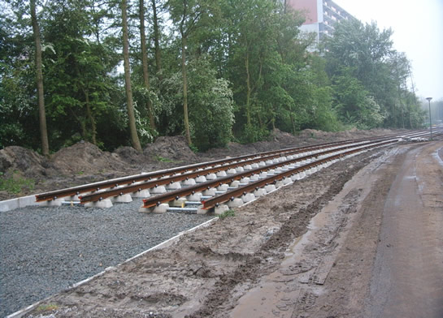
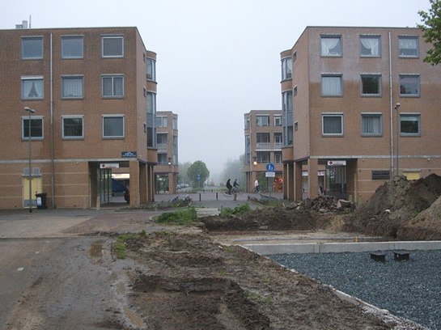
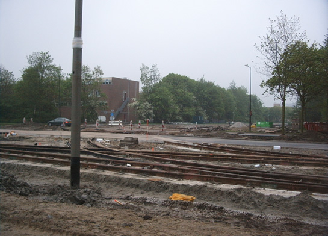
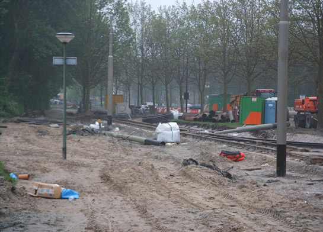
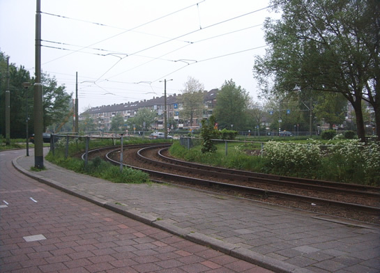

De Schiedam-Vlaardingenlijn komt eraan!
- maandag 08 december 2008 09:20
- Geschreven door Willem
Het heeft even op zich laten wachten, maar nu komt hij er toch echt aan: de Schiedam-Vlaardingenlijn, een nieuwe openbaar-vervoerverbinding per tram vanuit Schiedam Groenoord / Spaland naar Vlaardingen Holy. Vanaf het komend najaar zal men rechtstreeks vanuit hartje Rotterdam naar Vlaardingen Holy kunnen reizen en omgekeerd. De nieuwe lijn maakt deel uit van het moderne TramPlus-concept, welk al in 1996 haar eerste vruchten heeft geworpen in de vorm van lijn 20, die vandaag de dag heen en weer rijdt tussen het Centraal Station en de zuidelijke wijk Lombardijen.
Route
De nieuwe verbinding zal de bestaande route volgen van lijn 1 in het centrum van Schiedam. Ter hoogte van de oude keerlus van tram 4 aan de Broersvest zal de lijn overgaan op een nieuw tracé dat zal lopen langs de Schie, parallel aan de Overschiesestraat, om vervolgens station Schiedam Centrum aan te doen. Daarna zal de lijn via de Horvathweg teruggaan naar het oude tracé. De bestaande route tussen deze twee punten via de 's Gravelandseweg komt te vervallen. Dit gedeelte van de lijn zal pas in 2006 gereedkomen. Tot aan het Bachplein in Spaland zal de lijn de bestaande route volgen. In de bocht naar de Van Dalsumlaan zal de nieuwe lijn aftakken naar het westen en de Brederoweg volgen, welke t.h.v. de gemeentegrens met Vlaardingen overgaat in de Europaboulevard. Aan het einde van de weg, t.h.v. de Korhoenlaan, gaat de lijn rechtdoor over een voorheen braakliggend terrein. Na de kruising met de Lepelaarsingel zal de lijn recht door winkelcentrum "De Loper" heen gaan. Het eindpunt aan de Holysingel zal zijn in de vorm van een keerdriehoek. Hieronder wat foto's van de huidige situatie.

Over de eerste paar honderd meter langs de Brederoweg zijn al bovenleidingportalen geplaatst.

Hier komt de nieuwe Brederoweg te liggen. Daardoor krijgt de nieuwe tramlijn de ruimte. Momenteel is de bestaande weg (rechts) gedeeltelijk opgebroken en zijn er her en der wegversmallingen.

Langs de Europaboulevard is het talud reeds uitgegraven en is de betonnen bak aangebracht, welke zal worden gevuld met grind, waarop het spoor wordt gelegd.

In het verlengde van de Europaboulevard, voorbij de Korhoenlaan, wordt momenteel het talud gereedgemaakt, waarna hetzelfde zal worden gedaan als op de vorige foto.

Een eind verder, ten westen van De Loper, is de bouw al gevorderd. Tot hier zijn, vanaf het eindpunt, de sporen reeds aangebracht. De baan loopt hier parallel met een tweerichtings-fietspad (rechts).

Winkelcentrum De Loper. Hier zal de tramroute dwars doorheen gaan en zijn weg vervolgen richting Schiedam. In de verte zijn de graafmachines te zien op het vervolg van het traject, aan de overzijde van de Lepelaarsingel.

De Holysingel. Hier zullen de trams straks keren met behulp van deze keerdriehoek. Ook hier liggen de sporen er al. Ook zijn hier al de palen voor de bovenleiding geplaatst.

De noordelijke helft van de keerdriehoek. Deze wordt, in tegenstelling tot de zuidelijke helft, enkelsporig. De Holysingel, normaal vierbaansweg, is t.h.v. de werkzaamheden tijdelijk teruggebracht tot twee rijbanen. De auto's richting het centrum van Vlaardingen en de A20 maken gebruik van de andere weghelft.

Het Bachplein in Schiedam. In deze bocht zal vanaf september een deel van de trams aftakken richting Vlaardingen. De bestaande sporen op de achtergrond gaan naar de Woudhoek (vanaf volgend jaar juni station Spaland); op de voorgrond richting het centrum.
Datum van oplevering.
Naar de huidige planning zal het nieuwe tracé naar Vlaardingen Holy per 1 september 2005 in gebruik worden genomen. Vanaf het huidige eindpunt van lijn 1, de Harreweg, zal een verlenging worden gemaakt tot de spoorlijn naar Den Haag, waar het toekomstige NS-station Schiedam Spaland zal komen. Deze verlenging, plus het nieuwe tracé langs station Schiedam Centrum, wordt verwacht voor 1 juni 2006.
Tekst en foto's: Willem Bruins.